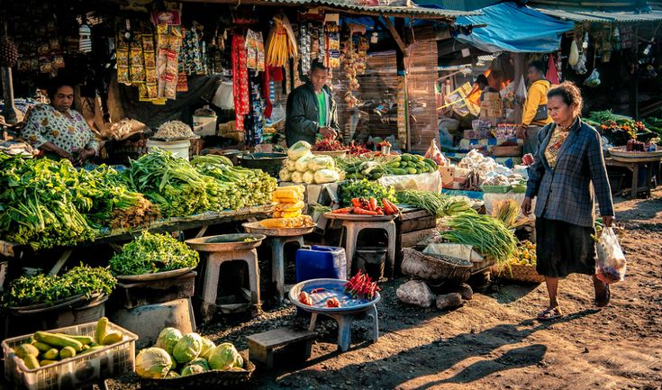

Arus kas adalah pergerakan uang yang masuk dan keluar dari suatu usaha dalam periode tertentu. Arus kas yang sehat menunjukkan bahwa usaha mampu membiayai operasional dan kewajibannya tanpa kesulitan.
Pahami Keuangan Usaha,
Ambil Keputusan Lebih Tepat!
Pelajari cara mengelola keuangan pribadi Anda dengan tips dan artikel terbaru kami.
Arus Kas
Laba Bersih
Laba bersih merupakan selisih antara total pendapatan dan seluruh biaya yang dikeluarkan, termasuk biaya operasional dan pajak. Nilai ini menunjukkan keuntungan nyata yang diperoleh usaha.
Biaya Operasional
Biaya operasional adalah pengeluaran rutin yang diperlukan agar usaha tetap berjalan, seperti biaya listrik, sewa tempat, gaji karyawan, dan biaya pemasaran.
Beban Tetap
Beban tetap adalah biaya yang tidak berubah meskipun volume produksi atau penjualan berubah, seperti sewa tempat, gaji karyawan tetap, dan asuransi.
Break Even Point (BEP)
Break Even Point adalah titik impas di mana total pendapatan sama dengan total biaya, sehingga usaha tidak mengalami untung maupun rugi.
Artikel Terbaru

Peran Strategis UMKM dalam Pertumbuhan Ekonomi
UMKM menjadi penggerak utama ekonomi Indonesia dan berperan besar dalam menciptakan lapangan kerja serta pertumbuhan usaha.
Baca SelengkapnyaManajemen Keuangan UMKM
Pengelolaan keuangan yang tepat membantu UMKM menjaga stabilitas usaha dan merencanakan pertumbuhan secara lebih terarah.
Baca Selengkapnya
Menabung Untuk Masa Depan
Menabung membantu pelaku UMKM mempersiapkan dana cadangan dan mewujudkan rencana usaha jangka panjang.
Baca SelengkapnyaPembukuan Sederhana Untuk UMKM
Tips dan strategi pencatatan keuangan yang memudahkan UMKM mengetahui kondisi usaha dan memantau keuntungan.
Baca Selengkapnya
Pengambilan Keputusan Usaha
Data keuangan yang baik membantu UMKM mengambil keputusan usaha dengan lebih tepat dan percaya diri.
Baca SelengkapnyaDigitalisasi Keuangan UMKM
Pemanfaatan teknologi keuangan membantu UMKM bekerja lebih efisien, transparan, dan siap bersaing.
Baca Selengkapnya